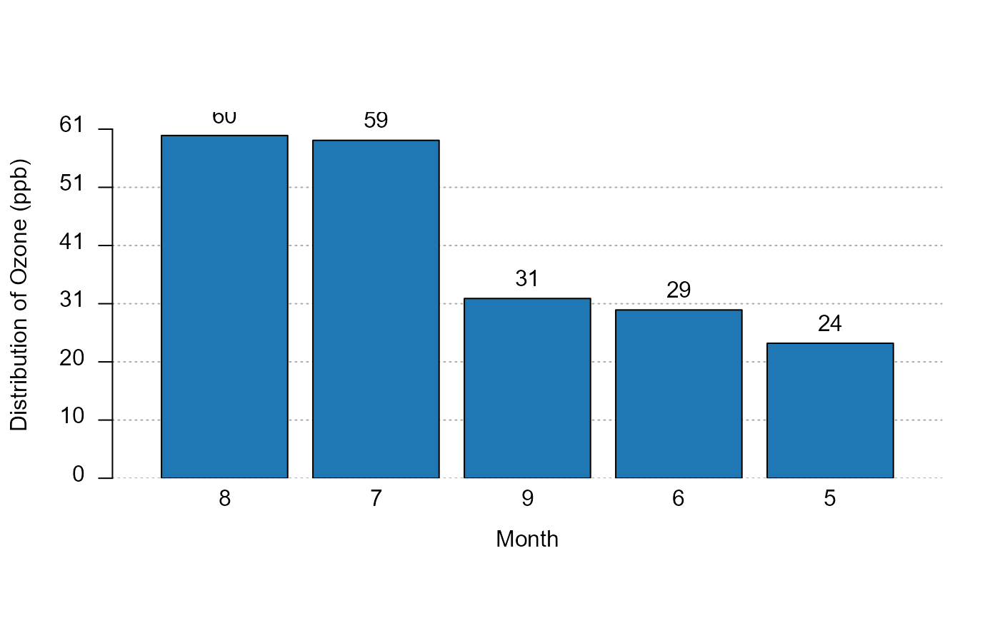

fplotsetFplot_dict.RdSets/gets the default dictionary used to rename the axes/moderator variables
in the functions of the package fplot. The dictionaries are used to relabel
variables (usually towards a fancier, more explicit formatting) that can be useful
not to explicitly use the arguments xlab/ylab when exporting graphs. By setting
the dictionary with setFplot_dict, you can avoid providing the argument
dict in fplot functions.
setFplot_dict(dict)
getFplot_dictAn object of class function of length 1.
A named character vector. E.g. to change my variable named "us_md"
and "state" to (resp.) "$ miilion" and "U.S. state", then use
dict = c(us_md="$ million", state = "U.S. state").
The function setFplot_dict() does not return anything, it only sets an option after checking
the format of the arguments.
The function getFplot_dict() returns a named vector representing the
dictionary set in setFplot_dict().
This function stores a named vector in the option "fplot_dict".
The dictionary is automatically accessed by all fplot functions.
data(airquality)
setFplot_dict(c(Ozone = "Ozone (ppb)"))
plot_distr(Ozone ~ Month, airquality, weight.fun = mean)
#> NOTE: 37 observations with NAs (weight: 37)
